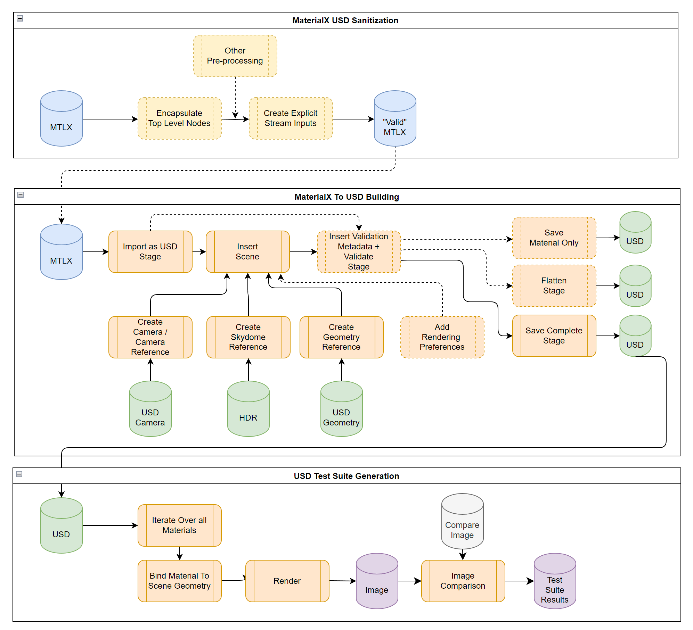

MaterialX USD Utilities
This is a Github repository of utilities related to MaterialX and USD.
This can be hooked into the larger interoperability picture with glTF / MaterialX and USD as shown in the example below:

Figure: MaterialX material from AMD GPUOpen library. Converted to USD and displayed in
usdview(top left), converted to glTF and display in ThreeJS editor (top right). Display in MaterialX Viewer (bottom left), and Web editor (bottom right)
Some initial utilities are provided with more coming on-line as the site / requirements progress.
Available Components
-
mtlx2usd.py: Utility which takes a MaterialX document and creates a corresponding USD document with scene geometry, lights, and camera.The main intent is currently to be able to consume documents from the MaterialX render test suite but any MaterialX file can be used as input.
Options Include: - Preprocess the MaterialX file to attempt to produce valid USD shading network (See Support Utilities) - Input geometry (USD file) - Input camera (USD file) - Skydome like (A latlong HDR file) - Perform USD validation - Export just the materials to a USD file. - Render the corresponding USD file. This uses
usdrecordcurrently. - Misc options for output for test suite compatibility: - Use material name for file name - Create in subfolder with name being the input MaterialX name -
Preprocessing Utilities:
preprocess_mtlx.py: Tries to preprocess a MaterialX document so that it considered valid by USD. Currently this includes logic to:- Encapsulate top level nodes in a MaterialX document into a nodegraph. Connections are preserved.
- Resolve any implicit geometry stream bindings on
inputsand make them explicit by adding geometric stream nodes and binding them to any inputs with implicit bindings. Note that this requires loading in the standard library to get node definitions.
Usage
Installation and Usage
Install from the root folder:
pip install .
Run using the materialxusd command.
Currently there are two commands for:
- MaterialX to USD conversion which can be run using
materialxusd m2u
and preprocessing MaterialX documents which can be run using
materialxusd pmtlx
The tests folder has a script with some command line calls to process an examples subfolder (run_examples.sh)
echo Convert sample MaterialX files to USD and render
materialxusd m2u -pp -v -sf -mn ./examples/no_materials.mtlx
materialxusd m2u -pp -v -f -sf -mn -r -m ./examples/standard_surface_carpaint.sphere.mtlx
materialxusd m2u -pp -v -sf -mn -r -m ./examples/standard_surface_marble_solid.mtlx
materialxusd m2u -pp -v -sf -mn -r -m ./examples/linepattern.mtlx
echo Preprocess and convert sample MaterialX files to USD
materialxusd pmtlx ./examples/linepattern_orig.mtlx
materialxusd m2u -pp -v -sf -mn -r -m ./examples/linepattern_orig_converted.mtlx
echo Convert ZIP file
materialxusd m2u -pp -v -sf -mn -r -m ./examples/TH_Cathedral_Floor_Tiles_1k_8b_JRHrQHt.zip
Some rendering of resulting USD files are shown below:
 Line Pattern Line Pattern |
 Marble Marble |
 Car Paint Car Paint |
 Wood Tile (Downloaded GPUOpen Zip) Wood Tile (Downloaded GPUOpen Zip) |
There is additionally a sample script that will traverse a local copy of the MaterialX test suite (render_rts.sh). The script calls the package's Python commands directly.
folders=(
"./resources/Materials/Examples"
"./resources/Materials/TestSuite/stdlib/convolution"
"./resources/Materials/TestSuite/stdlib/color_management"
"./resources/Materials/TestSuite/stdlib/procedural"
"./resources/Materials/TestSuite/pbrlib/surfaceshader"
"./resources/Materials/TestSuite/nprlib"
)
for folder in "${folders[@]}"; do
echo "Rendering $folder"
python ../source/materialxusd/mtlx2usd.py -pp -mn -sf "$folder" -r -g ./data/sphere.usd -c ./data/camera_sphere.usda -e ./data/san_giuseppe_bridge.hdr
done
Documentation
Python API documentation can be found here
Acceptance
An initial acceptance criteria is to be able to run MaterialX to USD conversion against the MaterialX render test suite files. Preliminary results are show below:
Gallery of Example Materials
glTF, Standard Surface, OpenUSD material renderings
Comparison: GLSL vs GLSLFX
Comparison: GLSL vs OSL vs GLSLFX
Design
